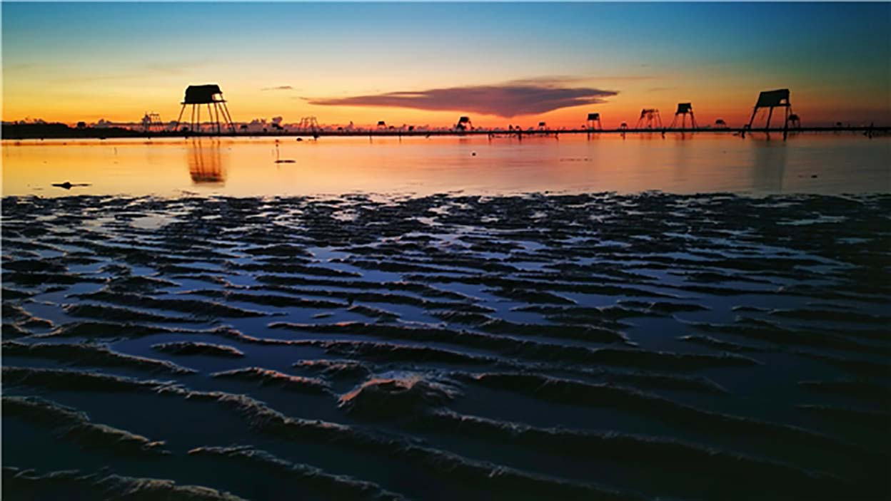
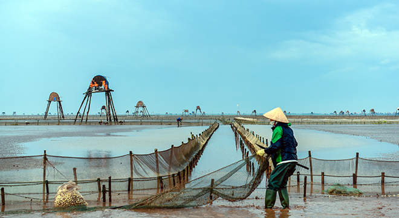
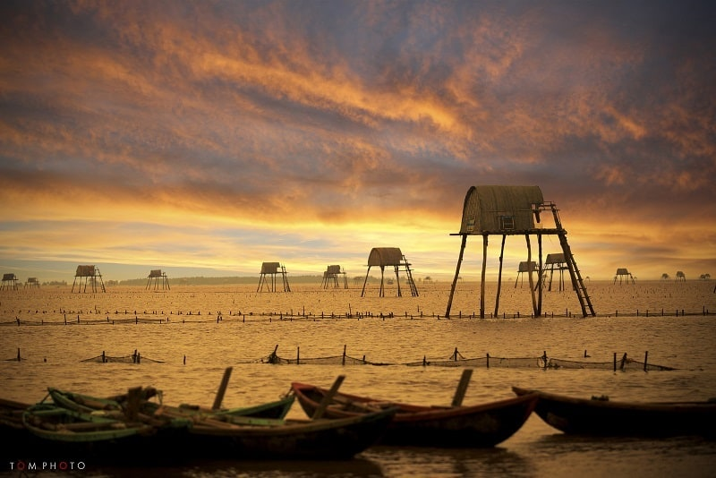

Danh hiệu "quê hương năm tấn" khiến nhiều du khách lầm tưởng Thái Bình chỉ có ruộng lúa bạt ngàn, song nếu tìm hiểu kỹ, vùng đất này còn sở hữu những bãi biển tuyệt đẹp.
Đến Thái Bình ngắm cồn biển đẹp nhất miền Bắc
SEP 5, 2021 BY VU HOANG ANH
Địa điểm tham quan
Du lịch biển của Thái Bình gắn với ba bãi biển tuyệt đẹp của vùng đất này là biển Đồng Châu thuộc
huyện Tiền Hải, cách thành phố Thái Bình 35 km theo tỉnh lộ đi Kiến Xương - Tiền Hải; Khu du lịch
sinh thái biển Cồn Vành, gồm bờ biển thuộc xã Đông Minh; Cửa Lân; hai đảo biển Cồn Thủ và Cồn Vành
và khu du lịch sinh thái biển Cồn Đen, cách đất liền khoảng 3 km thuộc địa phận xã Thái Đô, Thái
Thuỵ, cách trung tâm TP Thái Bình khoảng 40 km.
Điểm chung của các bãi biển là những triền cát trắng trải dài, sóng êm, những hàng phi lao xanh ngát
và luôn lộng gió, riêng Cồn Đen còn được xưng tụng là cồn biển đẹp nhất miền Bắc. Bên cạnh tắm biển,
tìm hiểu đời sống động thực vật, tổ chức các cuộc picnic, nghỉ dưỡng bằng tàu thuyền với các trò vui
chơi, giải trí trên biển như câu cá, lướt ván, bóng chuyền bãi biển, bạn còn có cơ hội tham quan các
ngôi đền, chùa trong khu vực.

Du lịch văn hóa gắn với các lễ hội, giỗ tổ Đền thờ vương triều nhà Trần, tham quan chùa Keo, đền Mẫu
Đợi xã Đông Hải huyện Quỳnh Phụ,đền Đồng Bằng xã An Lễ huyện Quỳnh Phụ, đền Tiên La.. Tham gia các
lễ hội này, ngoài việc hòa mình trong không khí sôi động, bạn sẽ tìm hiểu thêm về nét đẹp của các
tập tục, lễ nghi hay đơn giản là chiêm bái các công trình kiến trúc nổi tiếng.
Ngoài ra, bạn sẽ còn được chiêm ngưỡng cảnh quan thiên nhiên tương đối thuần khiết của miền đồng
bằng ven biển, tha hồ “vùng vẫy”, tạo dáng trong hương lúa non hay màu vàng trải dài như nối trời và
đất, vui chơi tại các lễ hội truyền thống như hội Keo, Tiên Ca, hội đề hét, …với nhiều hình thức hấp
dẫn, độc đáo như rước ông Đùng, chọi trâu, chọi gà, thi pháo đất…

Di chuyển
Trong bài này sẽ tính điểm xuất phát là Hà Nội, những bạn ở các tỉnh khác có thể tham khảo thông tin
tại bến xe mỗi tỉnh.
Bằng phương tiện công cộng
Bạn có thể mua vé tuyến Hà Nội – Thái Bình tại bến xe Mỹ Đình hay đặt vé ở các hãng xe chất lượng
cao của tuyến này như xe Thản Huệ, Hoàng Hà, Ngân Sơn… Lưu ý nên đặt luôn cả vé chiều về.
Bằng phương tiện cá nhân
Hà Nội cách Thái Bình khoảng 110km, khoảng cách vừa đủ cho một chuyến phượt trong ngày hay hành
trình nhỏ nếu các bạn muốn ghé các tỉnh lân cận.
Có hai hướng di chuyển từ Hà Nội – Thái Bình như sau:
Hà Nội - QL1 đến gần Đồng Văn rẽ trái qua cầu Yên lệnh đi theo QL39 Hưng yên qua cầu Triều Dương
sang Thái Bình, đường này em ít đi vì đoạn QL39 từ cầu Triều Dương đến thị xã Hưng Hà rất xấu.
Hà Nôi - QL1 đến Phủ lý rẽ trái vào QL21 đến điểm cầu vượt QL10 rẽ trái đi trên QL10 tuyến tránh TP
Nam định qua cầu Tân Đệ là đến Thái Bình.
Lưu ý mang đầy đủ giấy tờ, chấp hành luật an toàn đường bộ. Mang bao tay, khẩu trang, mắt kính.
Trang bị điện thoại có chức năng google map để tiện di chuyển.
Những cung đường thường gặp
Hà Nội – Thái Bình – Hải Phòng – Quảng Ninh
Hà Nội - Thái Bình – Nam Định
Hà Nội - Thái Bình – Hưng Yên
Hà Nội - Hà Tây - Thái Bình – Ninh Bình